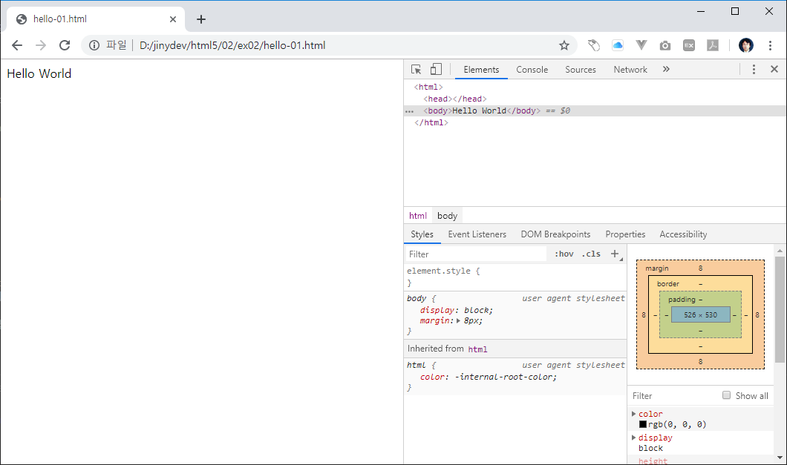

인사말 출력
웹 브라우저에서 확인을 할 수 있는 인사말을 문서를 생성해 봅니다.
인사말 작성
새로운 hello.html 파일이 생성이 되었습니다. 아직 아무것도 없는 비어있는 파일입니다.
다음과 같이 내용을 입력합니다.
Hello World
파일을 저장합니다. 파일이 수정이되면 상단 파일명 탭에 * 표시가 같이 출력이 됩니다. 이는 아직 파일이 수정후에 저장이 되어 있지 않다는 것을 표시하는 것입니다.
vscode에서 file->save를 선택합니다. 또는 단축키 ctrl+s를 입력합니다.
자동저장 vscode는 파일이 수정되면 자동으로 저장할 수 있도록 환경옵션을 설정할 수 있습니다.
file->preferences->setting을 선택합니다.commonly->auto save를 설정합니다.
확인
작성한 hello.html 파일을 웹 브라우저로 확인을 합니다. 크롬 브라우저 url에서 로컬 컴퓨터의 파일 위치를 입력합니다.
작성예시)
file:///D:/jinydev/html5/02/ex02/hello-01.html
결과확인

코드확인
크롬 브라우저를 통하여 개발화 도구를 활성화 합니다. 단축키 f12를 누르면 오른쪽에 크롬 개발자 도구가 활성화 됩니다.
개발자 도구에서 Elements 텝을 클립합니다.
결과확인 
우리는 앞에서 hello world 라는 텍스트만 입력을 하였습니다. 하지만, 그외 다른 코드들이 같이 출력이 되는 것을 확인할 수 있습니다.